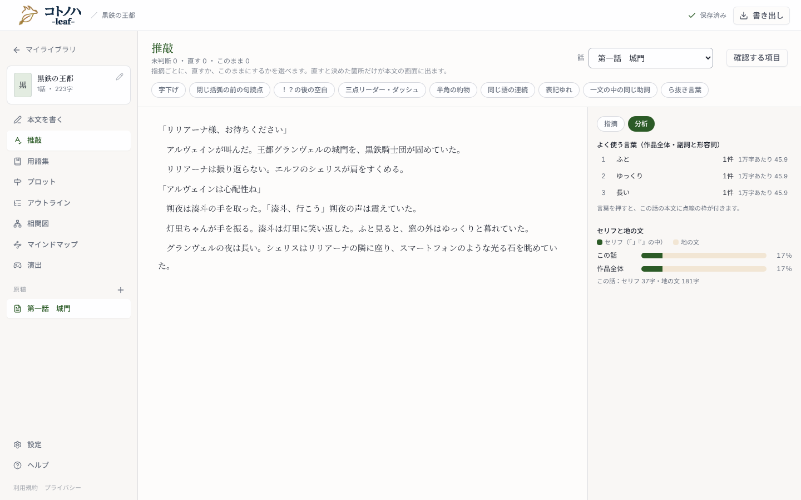
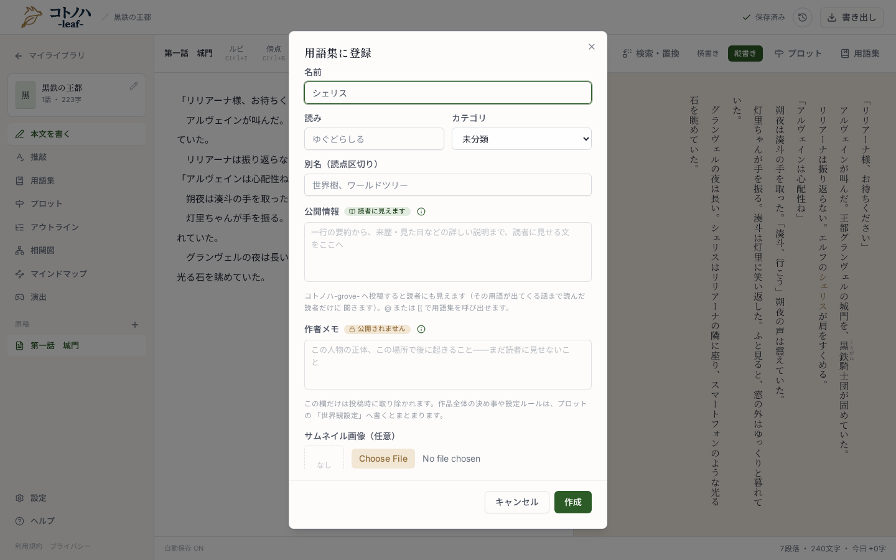

推敲画面の「分析」で、本文に出てくるのに用語集に無い名前を一覧にします。名前・読み・カテゴリが入った状態で登録フォームを開けます。名前でない語は外せます。候補づくりは端末の中だけで行い、AI は使いません。
番号は design.md の UI 節と対応しています。モックの中のボタンは押せます。

撮影は、作業ツリーとは別の一時コピーで会員の判定だけを外したもの（推敲画面は無料のアカウント登録から）。
別名・公開情報・作者メモ・サムネイル画像（いまのフォームのまま・省略）
右の欄は実物の幅（約 384px）より少し狭く描いています。行の右の「用語集に登録」「外す」は高さ 24px の小ボタン（Button size="xs"）。名前を押した行は淡い緑。

フォームそのものは変えません。推敲画面の「用語集に登録」から開くと、名前に加えて、推定できた読み（ひらがな）とカテゴリ（人物・場所・組織）が入った状態で開きます。推定できない項目は、今と同じ空欄・未分類です。上のモックで「リリアーナ」の「用語集に登録」を押すと、入った状態を確かめられます。作成すると一覧からすぐ消えます。
推敲画面のくわしい確認は、端末の中で文章を解析します。原稿は外に送りません。解析には、Lindera と IPADIC を使っています（ライセンス表記）。今の言葉は SudachiDict から足しています（ライセンス表記・Apache-2.0。一部に UniDic を含みます）。
緑の下地が足す文。既存の文の言い回しは実装時に help-page.tsx の現物に合わせる。スマホ版は対象外（推敲画面は PC だけ）。